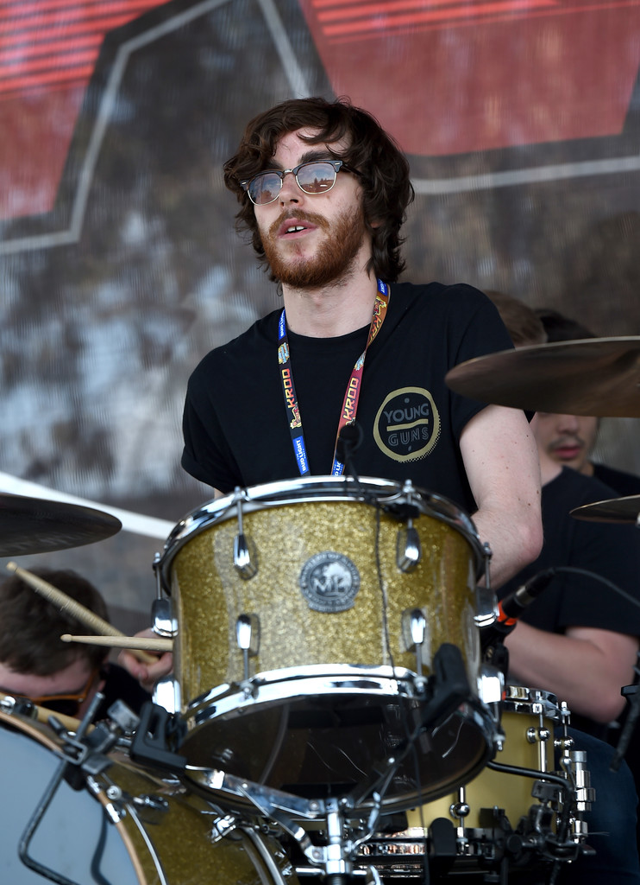
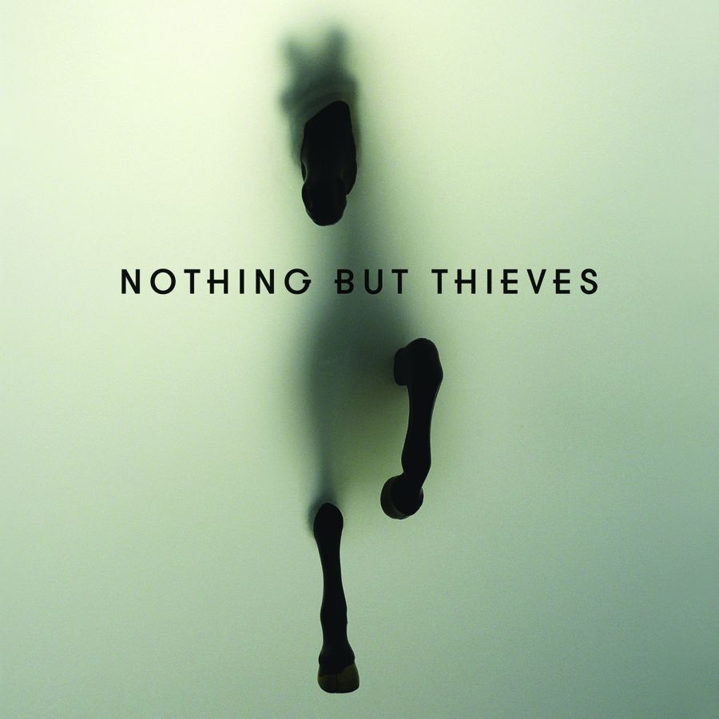
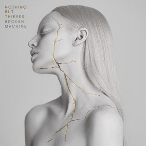
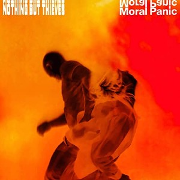
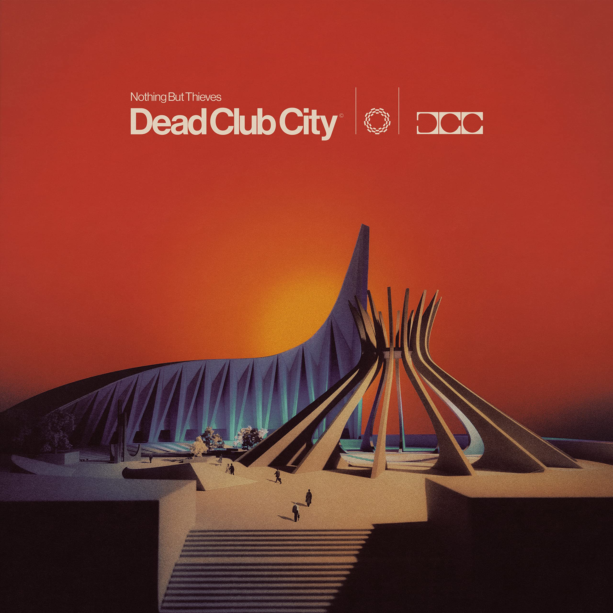

Członkowie Zespołu
| Muzyk | Instrument | Od kiedy w zespole | Zdjęcie |
|---|---|---|---|
| Conor Mason | Wokal, gitara | 2012 | |
| Dominic Craik | Gitara basowa | 2012 | |
| Joe Langridge-Brown | gitara | 2012 | |
| Philip Blake | bass | 2012 |  |
| James Price | perkusja | 2012 |  |
Dyskografia

Nothing But Thieves
Rok wydania: 2015

Broken Machine
Rok wydania: 2017

Moral Panic
Rok wydania: 2020

Dead club city
Rok wydania: 2023